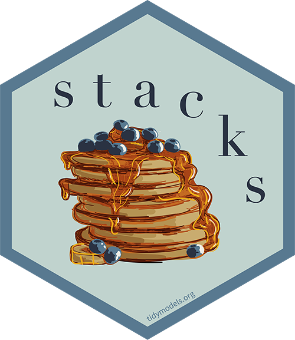

stacks - tidy model stacking 
stacks is an R package for model stacking that aligns with the tidymodels. Model stacking is an ensembling method that takes the outputs of many models and combines them to generate a new model—referred to as an ensemble in this package—that generates predictions informed by each of its members.
The process goes something like this:
- Define candidate ensemble members using functionality from rsample, parsnip, workflows, recipes, and tune
- Initialize a
data_stackobject withstacks()
- Iteratively add candidate ensemble members to the
data_stackwithadd_candidates()
- Evaluate how to combine their predictions with
blend_predictions()
- Fit candidate ensemble members with non-zero stacking coefficients with
fit_members()
- Predict on new data with
predict()
You can install the package with the following code:
install.packages("stacks")Install the development version with:
remotes::install_github("tidymodels/stacks", ref = "main")stacks is generalized with respect to:
- Model type: Any model type implemented in parsnip or adjacent packages is fair game to add to a stacks model stack. Here’s a table of many of the implemented model types in the tidymodels core, with a link there to an article about implementing your own model classes as well.
- Cross-validation scheme: Any resampling algorithm implemented in rsample or adjacent packages is fair game for resampling data for use in training a model stack.
- Error metric: Any metric function implemented in yardstick or adjacent packages is fair game for evaluating model stacks and their members. That package provides some infrastructure for creating your own metric functions as well!
stacks uses a regularized linear model to combine predictions from ensemble members, though this model type is only one of many possible learning algorithms that could be used to fit a stacked ensemble model. For implementations of additional ensemble learning algorithms, check out h2o and SuperLearner.
Rather than diving right into the implementation, we’ll focus here on how the pieces fit together, conceptually, in building an ensemble with stacks. See the basics vignette for an example of the API in action!
a grammar
At the highest level, ensembles are formed from model definitions. In this package, model definitions are an instance of a minimal workflow, containing a model specification (as defined in the parsnip package) and, optionally, a preprocessor (as defined in the recipes package). Model definitions specify the form of candidate ensemble members.
A diagram representing “model definitions,” which specify the form of candidate ensemble members. Three colored boxes represent three different model types; a K-nearest neighbors model (in salmon), a linear regression model (in yellow), and a support vector machine model (in green).
To be used in the same ensemble, each of these model definitions must share the same resample. This rsample rset object, when paired with the model definitions, can be used to generate the tuning/fitting results objects for the candidate ensemble members with tune.

A diagram representing “candidate members” generated from each model definition. Four salmon-colored boxes labeled “KNN” represent K-nearest neighbors models trained on the resamples with differing hyperparameters. Similarly, the linear regression model generates one candidate member, and the support vector machine model generates six.
Candidate members first come together in a data_stack object through the add_candidates() function. Principally, these objects are just tibbles, where the first column gives the true outcome in the assessment set (the portion of the training set used for model validation), and the remaining columns give the predictions from each candidate ensemble member. (When the outcome is numeric, there’s only one column per candidate ensemble member. Classification requires as many columns per candidate as there are levels in the outcome variable.) They also bring along a few extra attributes to keep track of model definitions.

A diagram representing a “data stack,” a specific kind of data frame. Colored “columns” depict, in white, the true value of the outcome variable in the validation set, followed by four columns (in salmon) representing the predictions from the K-nearest neighbors model, one column (in tan) representing the linear regression model, and six (in green) representing the support vector machine model.
Then, the data stack can be evaluated using blend_predictions() to determine to how best to combine the outputs from each of the candidate members. In the stacking literature, this process is commonly called metalearning.
The outputs of each member are likely highly correlated. Thus, depending on the degree of regularization you choose, the coefficients for the inputs of (possibly) many of the members will zero out—their predictions will have no influence on the final output, and those terms will thus be thrown out.

A diagram representing “stacking coefficients,” the coefficients of the linear model combining each of the candidate member predictions to generate the ensemble’s ultimate prediction. Boxes for each of the candidate members are placed besides each other, filled in with color if the coefficient for the associated candidate member is nonzero.
These stacking coefficients determine which candidate ensemble members will become ensemble members. Candidates with non-zero stacking coefficients are then fitted on the whole training set, altogether making up a model_stack object.
A diagram representing the “model stack” class, which collates the stacking coefficients and members (candidate members with nonzero stacking coefficients that are trained on the full training set). The representation of the stacking coefficients is as before, where the members (shown next to their associated stacking coefficients) are colored-in pentagons. Model stacks are a list subclass.
This model stack object, outputted from fit_members(), is ready to predict on new data! The trained ensemble members are often referred to as base models in the stacking literature.
The full visual outline for these steps can be found here. The API for the package closely mirrors these ideas. See the basics vignette for an example of how this grammar is implemented!
{kind=link}
contributing
This project is released with a Contributor Code of Conduct. By contributing to this project, you agree to abide by its terms.
For questions and discussions about tidymodels packages, modeling, and machine learning, please post on RStudio Community.
If you think you have encountered a bug, please submit an issue.
Either way, learn how to create and share a reprex (a minimal, reproducible example), to clearly communicate about your code.
Check out further details on contributing guidelines for tidymodels packages and how to get help.
In the stacks package, some test objects take too long to build with every commit. If your contribution changes the structure of data_stack or model_stacks objects, please regenerate these test objects by running the scripts in man-roxygen/example_models.Rmd, including those with chunk options eval = FALSE.